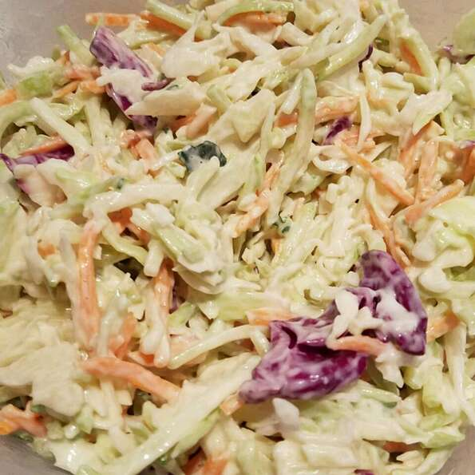

Coleslaw

Description
Coleslaw without mayonnaise dressing.
Ingredients
- 1 medium head cabbage, shredded
- 1 carrot
- ¼ onion, chopped
- ¼ cup vegetable oil
- ¼ cup vinegar
- ¼ cup white sugar
Step
- In a large bowl, combine cabbage, carrot, onion, vegetable oil, vinegar and sugar. Stir until the ingredients are well mixed. Chill in the refrigerator until serving.